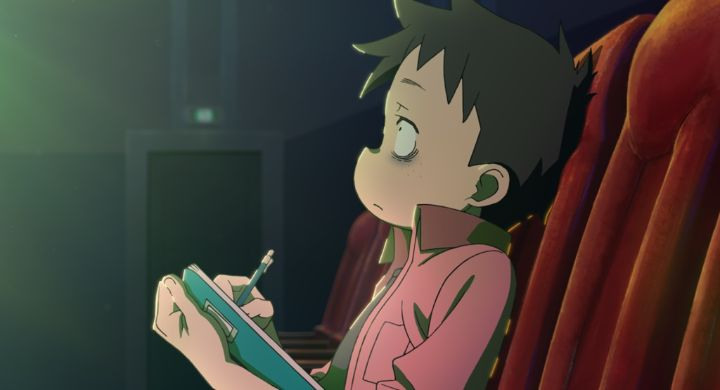

I love animation. In fact, I love movies in general. Frequently going to the movie theater was a big part of my childhood. And I still remember attending a film festival as a teenager for an art class, loving the experience, and returning in subsequent years, watching dozens of foreign and indie films most people haven't heard of. And I understood the language and process of making movies. Perhaps a small part of me once dreamed of making movies.So you'd think an anime film about making movies would be perfect for me. But on paper, I was concerned. I did not ask for this. I did not ask for a larger-than-life moe 10-year-old to be the biggest producer in Hollywood. Sorry, "Nya-llywood," the fictional version of the US-movie capital. I did not ask for a beady-sunken-eyed hapless loser to be our stand-in as the girl's assistant in-training. And I did not ask for yet another production in the "educational" genre of anime, following other stories covering the production of TV anime, Japanese candies, or the human body's defense system. But we got it anyway in the 2021 film "Pompo - The Cinephile." And it's pretty decent.In this fictionalized world that's basically the same as ours, we're transported to Nyallywood, where Pompo the producer works. She's a short energetic girl constantly eating sweets or milkshakes, the granddaughter of a famous director, and was raised on movies. Therefore, she's a natural prodigy, one of the best in the business, working exclusively on B-movies (both because they're fun, and because of the challenge they present to get audiences on board). She's just the producer though, spending her time running between film sets, hiring casts and crew, scheduling and budgeting all of it. The audience's avatar is Gene, Pompo's assistant-in-training. He primarily just gets food for Pompo as a gopher, but is enthralled by the film-making process, constantly taking notes on everything he sees. We're also introduced to Nathalie Woodward (a name that sounds far too similar to Nyallywood, but is never addressed), a young woman with dreams to be an actress, but with no skill or training. Later, Alan, an old schoolmate of Gene's and currently a banker, gets involved. Initially cold (Pompo immediately dismisses Nathalie in an acting audition for having no ability), Pompo finds talent in all of them, and writes a script for a new drama. It's certain to be a hit. Maybe an award-winner. And Pompo wants Gene to direct, his first real job as a filmmaker!I expected countless homages to other Hollywood films, but there weren't all that many (or if they were, they were too obscure for even me to notice). This is really about the film-making process rather than simply the love of film itself. It's about casting, networking, and working with a crew, and getting feedback and using it properly. It's about shooting on location and dealing with weather and other things beyond the team's control. It's about following the script, but also trying new ideas and scenes on the fly. And it's about editing, the part Gene loves the most: but with nearly 100 hours of footage, how can he get it down to a final cut before the premiere? Then reality hits when he determines reshoots are required, and issues occur with the film's investors. It's not too technical with all the jargon, but instead focuses on the energy and spirit of teamwork and the production of art, including its ups and downs. The real star of "Pompo - the Cinephile" is its editing. It's not perfect, but it might be the most ambitious editing I've seen in an animated film. The movie is filled with time-jumps forward and back, split-screens, overlaid titles, and a bunch of other tricks. The official runtime of this movie is exactly 90 minutes, a great easter egg that makes sense after watching. At times, the movie is so high on energy that the editing risks going off the rails, but things manage to stay on track, and complicated stories and conclusions make sense without losing the viewer. If I had any gripes, it was stuff I expected when the movie began. Pompo is cute, but the overpowered three-foot-high loli character is a trope that I've grown tired off long ago. While the movie tries to keep the Hollywood aesthetic in its framing, some tropes in anime rear their head (at the start, Pompo is watching a monster movie being made, praising the camera-work where a giant octopus squeezes the lead actress' breasts). And while some of the solutions to the tougher situations of film production are clever, it still paints a rosier picture than the reality. "Pompo - the Cinephile" continues the legend that movies will save humanity through hope, however exagerrated that might be. Beyond that, the movie's production values are also good, but not exceptional. As far as I know, the is Studio CLAP's first major work, and they do a solid job, even though the results aren't much beyond what modern television anime looks like (the cartoonish character designs are the biggest limiter). I saw the movie with an English dub from GKIDS, which had a lot to deal with and comes out mostly fine. I don't think (and certainly do not hope) that Pompo will take over Hollywood as a new mascot for film production. But for existing fans of anime who also love filmmaking (explicitly live-action movie production, not animation or Japanese anime) should get a kick out of "Pompo - the Cinephile." As as the production team said in an interview, I think the movie might be a good pick-me-up for when you're feeling down in your own journey to make things.
- "Ani" More reviews can be found at : https://2danicritic.github.io/ Previous review: review_Pom_Poko Next review: review_Ponyo